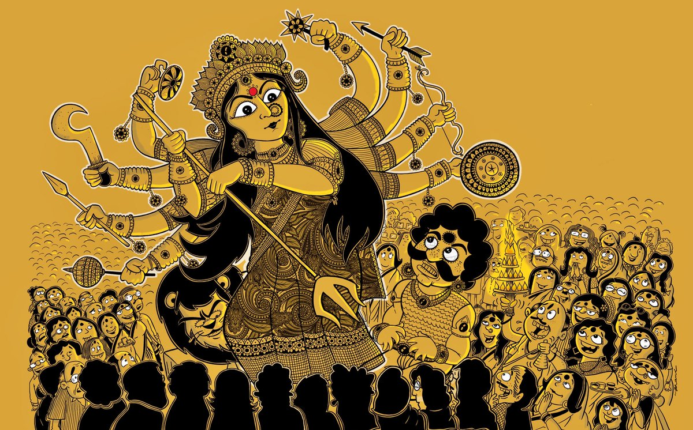

কলকাতা ও পারিবারিক দুর্গোৎসব :
ভারতবর্ষের পশ্চিমবঙ্গে কলকাতা শহর হল শারদ উৎসবের প্রাণকেন্দ্র। যতদূর জানা যায় কলকাতা শহরে সর্বপ্রথম দুর্গোৎসবের আয়োজন করেছিলেন সাবর্ণ রায়চৌধুরী পরিবার। প্রাচীন এই পূজাটি এখনো রায়চৌধুরী পরিবারের সাতটি শাখার বিভিন্ন বাড়িতে আয়োজিত হয়ে থাকে। অন্যদিকে ব্রিটিশ ভারতের রাজধানী কলকাতায় শোভাবাজারের রাজবাড়ীতে একটি পূজার আয়োজন করেন মহারাজ রাধাকান্ত দেব।
তার দেখাদেখি কিছুকাল পর থেকেই কলকাতার বিভিন্ন জমিদার ও উচ্চবিত্ত বাড়িতে শারদ উৎসবের আয়োজন করা হতে থাকে। যদিও দুর্ভাগ্যজনকভাবে এই পূজাগুলিতে আচার ও আনন্দের থেকেও বড় হয়ে দাঁড়াত নিজেদের প্রতিপত্তি ও বিত্তের জৌলুস প্রদর্শন এবং সাহেবি বেলেল্লাপনা। সাধারণ আপামর বাঙালির সাথে এই পূজার কোন যোগসূত্র ছিলনা।

এই প্রবণতায় ক্ষুব্ধ হয়ে রানী রাসমণি তার জানবাজারের বাড়িতে সাধারণ মানুষের প্রবেশযোগ্য একটি দূর্গা পূজার আয়োজন করেন। তারপর থেকেই একটু একটু করে বিভিন্ন পরিবারে পারিবারিক দুর্গোৎসবের প্রবণতা ছড়িয়ে পড়ে। আজ আর এই উৎসব শুধু কতগুলো ধনী বাড়ির মধ্যে সীমাবদ্ধ নয়। বর্তমানে কলকাতার বিভিন্ন বাড়িতে শরৎকালের এই দুর্গাপূজার আয়োজন করা হয়ে থাকে।